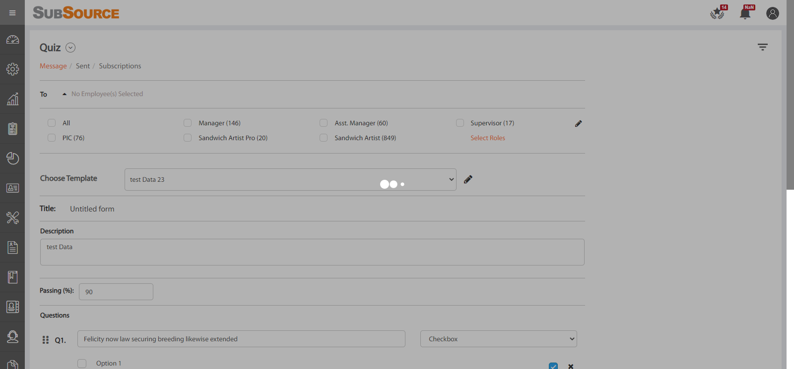
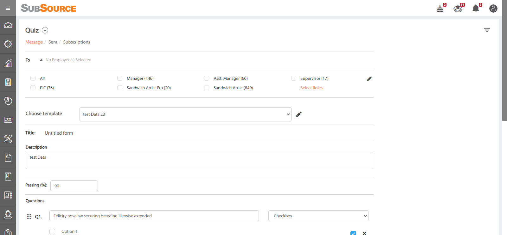
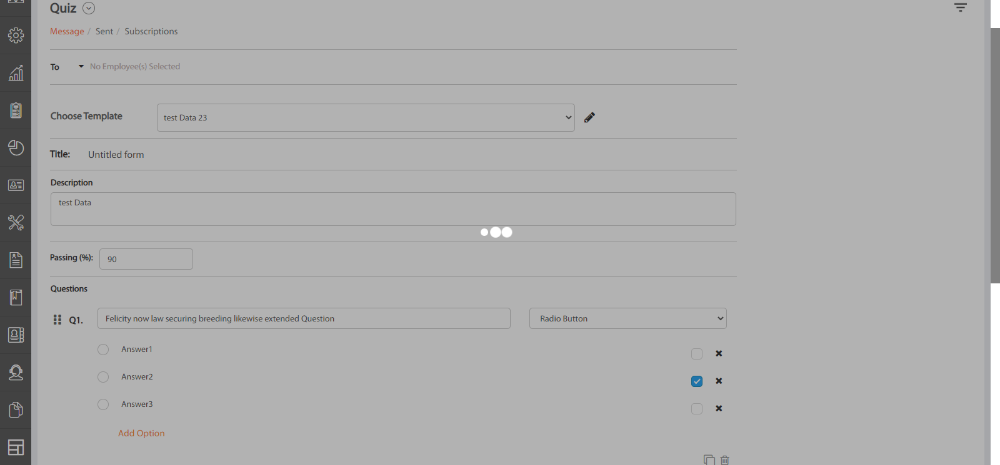
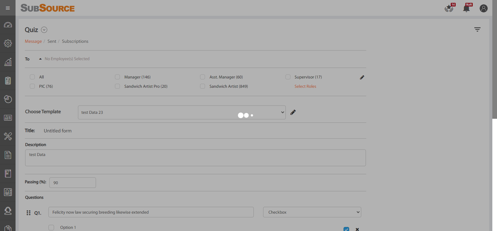
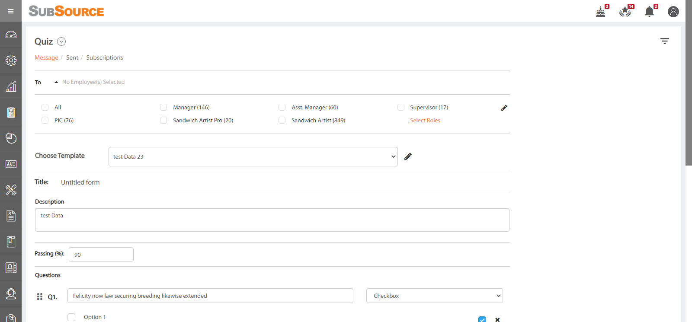
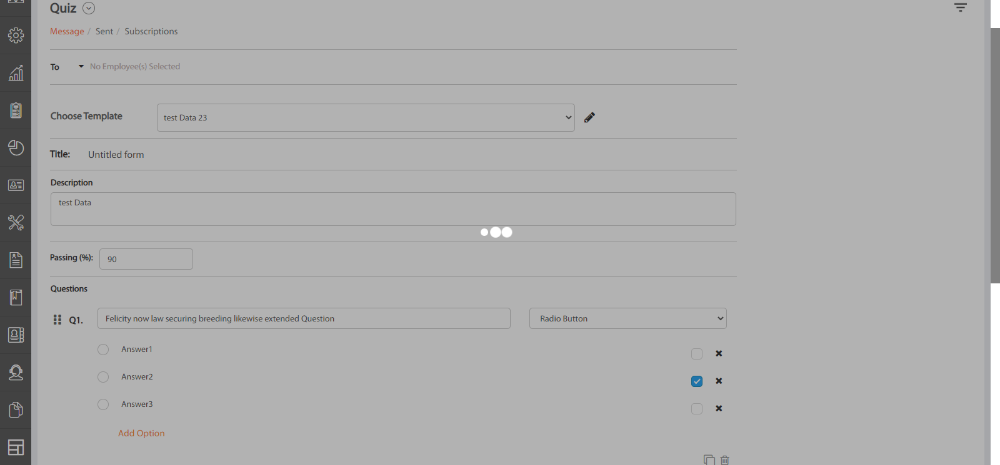

Started
Jun 25, 2021 03:01:24 PM
Ended
Jun 25, 2021 03:11:09 PM
Features Passed
0
Features Failed
1
Features
Scenarios
Steps
Timeline
Tags
| Name | Passed | Failed | Skipped | Others | Passed % |
|---|---|---|---|---|---|
| @persent | 1 | 0 | 0 | 0 | 100% |
System/Environment
| Name | Value |
|---|---|
| build | 1.1 |
| user | BussinessWebSoft |
| NAME | ExtentReport |
| AppName | subsource |
| os | windows |
-
To test the Quiz Module functionality of Subsource
15:01:25 PM / 00:09:44:043 Fail
To test the Quiz Module functionality of Subsource
06.25.2021 15:01:25 06.25.2021 15:11:09 00:09:44:043 · #test-id=1PassTo verify the basic functionality For TO buttonGiven user navigate to the Quiz pageWhen To Leave as a emty and click on To Edit buttonThen Edit button pop up message should be displayedWhen TO text Leave as a emty and choose the Test templateThen Quiz Should not be sent to the employeesFailTo Verify the basic functionalitys for choose template edit buttonGiven user navigate to the Quiz pageWhen Click on choose template edit buttonThen The Edit pop up window should be displayedParallel.ApplicationHooks.tearDown(io.cucumber.java.Scenario)To_Verify_the_basic_functionalitys_for_choose_template_edit_buttonFailTo validate the creating New Quiz Template,Edit Quiz Template Name and Delete the Quiz TeamplateGiven user navigate to the Quiz pageWhen creating new Quiz Template as "Quiz" , title is "General Question", Description "Every one has basic general knowledge" and passing percentage is "60"Then New Quiz Template should be created and Pop up message Sholud be displayed as "Quiz template saved successfully."When Edit "Quiz" template name to "Quizbws"Step skippedThen Template Name should be Changed and pop up message should be displayed as "Template name updated successfully."Step skippedWhen Click on "Quizbws" Delete buttonStep skippedThen Quiz Template Should be Deleted and pop up Message Shoud be displayed as "Quiz Template deleted successfully!"Step skippedParallel.ApplicationHooks.tearDown(io.cucumber.java.Scenario)To_validate_the_creating_New_Quiz_Template,Edit_Quiz_Template_Name_and_Delete_the_Quiz_Teamplate Failto verify the creating new quiz Teamplate by enetring invalid dataGiven user navigate to the Quiz pageThen Quiz Template Should not be created and PopUp message should be displayed as "Please check all Required Fields"Parallel.ApplicationHooks.tearDown(io.cucumber.java.Scenario)to_verify_the_creating_new_quiz_Teamplate_by_enetring_invalid_data
Failto verify the creating new quiz Teamplate by enetring invalid dataGiven user navigate to the Quiz pageThen Quiz Template Should not be created and PopUp message should be displayed as "Please check all Required Fields"Parallel.ApplicationHooks.tearDown(io.cucumber.java.Scenario)to_verify_the_creating_new_quiz_Teamplate_by_enetring_invalid_data Failto verify the basic functionality for subscriptionGiven user navigate to the Quiz pageWhen creating new Quiz as "subscription" , title is "General Knowledge", Description "Creating Quiz for Subscription" and passing percentage is "70"Then the quiz should be creadted and Pop up message Sholud be displayed as "Quiz template saved successfully."When navigate to the subscription pageStep skippedAnd creating new subscription list as "testing"Step skippedAnd select template name as "subscription"Step skippedThen save the subscription list and Pop up Should be displayed as "Rule created successfully."Step skippedWhen user navigate to the message pageStep skippedThen Let delete the Subscription quiz"subscription" but user not able to delete delete the subscritpion Quiz and get the text as "This template can not be deleted as this is mapped with the subscription(s)."Step skippedWhen navigate to the subscription list pageStep skippedThen Validate The "subscription" Subscription Quiz list edit Button functionStep skippedWhen Changing the Subscription name "testing" to "Edting" of "subscription" quizStep skippedThen Verify the basic functionality for "subscription" quiz delete button and get the validation text as "Rule deleted successfully."Step skippedWhen user navigate to the message pageStep skippedThen Let delete the "subscription" quiz and successfull Message get as "Quiz Template deleted successfully!"Step skippedParallel.ApplicationHooks.tearDown(io.cucumber.java.Scenario)to_verify_the_basic_functionality_for_subscription
Failto verify the basic functionality for subscriptionGiven user navigate to the Quiz pageWhen creating new Quiz as "subscription" , title is "General Knowledge", Description "Creating Quiz for Subscription" and passing percentage is "70"Then the quiz should be creadted and Pop up message Sholud be displayed as "Quiz template saved successfully."When navigate to the subscription pageStep skippedAnd creating new subscription list as "testing"Step skippedAnd select template name as "subscription"Step skippedThen save the subscription list and Pop up Should be displayed as "Rule created successfully."Step skippedWhen user navigate to the message pageStep skippedThen Let delete the Subscription quiz"subscription" but user not able to delete delete the subscritpion Quiz and get the text as "This template can not be deleted as this is mapped with the subscription(s)."Step skippedWhen navigate to the subscription list pageStep skippedThen Validate The "subscription" Subscription Quiz list edit Button functionStep skippedWhen Changing the Subscription name "testing" to "Edting" of "subscription" quizStep skippedThen Verify the basic functionality for "subscription" quiz delete button and get the validation text as "Rule deleted successfully."Step skippedWhen user navigate to the message pageStep skippedThen Let delete the "subscription" quiz and successfull Message get as "Quiz Template deleted successfully!"Step skippedParallel.ApplicationHooks.tearDown(io.cucumber.java.Scenario)to_verify_the_basic_functionality_for_subscription PassTo Verify the basic functionality for Send Only buttonGiven user navigate to the Quiz pageWhen Click on to button and Choose the to recipientsAnd creating the new quiz as "recipients"Then Lets click on Send only button then the quiz is assigned to the recipients and pop up message is displayed as "Quiz assigned succesfully!"FailTo Validate the basic functionality for Save and Send buttonGiven user navigate to the Quiz pageWhen Click on to button and Choose the to recipientsAnd creating the new quiz as "recipients"Step skippedThen Lets click on Save and Send button then the quiz is saved,assigned to the recipients and pop up message is displayed as "Quiz assigned succesfully!"Step skippedWhen navigate to the quiz message page and click on teamplate Edit buttonStep skippedThen to validate wheather the "recipients" quiz saved or notStep skippedThen Let delete the "recipients" quiz and successfull Message is displayed as "Quiz Template deleted successfully!"Step skippedParallel.ApplicationHooks.tearDown(io.cucumber.java.Scenario)To_Validate_the_basic_functionality_for_Save_and_Send_buttonFailTo Validate the basic functionality of Upate Template buttonGiven user navigate to the Quiz pageWhen creating Quiz as "Update Template" , title is "General Knowledge", Description "Creating Quiz for Subscription" and passing percentage is "70"Then Quiz should be creadted and Pop up message Sholud be displayed as "Quiz template saved successfully."When select new Template as "Update Template"When Let changing the template title as "Upadte"Then click on update Template button then The template should be Updated and PopUp message should be displayed as "Quiz template updated successfully."Then let delete the "Update Template" quiz and pop up message should be displayed as "Quiz Template deleted successfully!"Step skippedParallel.ApplicationHooks.tearDown(io.cucumber.java.Scenario)To_Validate_the_basic_functionality_of_Upate_Template_buttonFailTo verify the basic functionality of Select Roles buttonGiven user navigate to the Quiz pageWhen Click on To button and nagivate to Select RoleThen The "Additional Roles" window is DispalyedStep skippedParallel.ApplicationHooks.tearDown(io.cucumber.java.Scenario)To_verify_the_basic_functionality_of_Select_Roles_buttonPassTo Validate the basic functionality of additional role check boxGiven user navigate to the Quiz pageWhen Click on To button and nagivate to Select RoleAnd Click on all the check boxesAnd Click on save buttonThen all "12" roles shoulb be selectedFailTo Validate the basic finctionality of Plus buttonGiven user navigate to the Quiz pageWhen Select the new Template as "Create new template..."Then Click on Plus button up to 100 Questions then the "Q100." should be created.Parallel.ApplicationHooks.tearDown(io.cucumber.java.Scenario)To_Validate_the_basic_finctionality_of_Plus_buttonFailTo Verify the copy buttonGiven user navigate to the Quiz pageWhen Select the new Template as "Create new template..."And Fill The "Question"text,Select"Radio Button" option,fill the options as "Answer1","Answer2","Answer3" and select answerAnd Click on copy buttonThen The copy "Question" should be created with the "Radio Button"option,options as "Answer1","Answer2","Answer3"Step skippedParallel.ApplicationHooks.tearDown(io.cucumber.java.Scenario)To_Verify_the_copy_buttonFailTo Valiadte The basic functionality of Save new tenplateGiven user navigate to the Quiz pageWhen creating Quiz as "Update Template" , title is "General Knowledge", Description "Creating Quiz for Subscription" and passing percentage is "70"Then Quiz should be creadted and Pop up message Sholud be displayed as "Quiz template saved successfully."When select new Template as "Update Template"Step skippedWhen Let changing the template title as "Upadte"Step skippedWhen clickon save new template buttonStep skippedWhen Enter the new "Template Name"Step skippedThen the pop up message should be display as"Quiz template saved successfully."Step skippedParallel.ApplicationHooks.tearDown(io.cucumber.java.Scenario)To_Valiadte_The_basic_functionality_of_Save_new_tenplateFailTo validate the Manager Edit buttonGiven user navigate to the Quiz pageWhen Click on To button and Manager Check boxParallel.ApplicationHooks.tearDown(io.cucumber.java.Scenario)To_validate_the_Manager_Edit_button
PassTo Verify the basic functionality for Send Only buttonGiven user navigate to the Quiz pageWhen Click on to button and Choose the to recipientsAnd creating the new quiz as "recipients"Then Lets click on Send only button then the quiz is assigned to the recipients and pop up message is displayed as "Quiz assigned succesfully!"FailTo Validate the basic functionality for Save and Send buttonGiven user navigate to the Quiz pageWhen Click on to button and Choose the to recipientsAnd creating the new quiz as "recipients"Step skippedThen Lets click on Save and Send button then the quiz is saved,assigned to the recipients and pop up message is displayed as "Quiz assigned succesfully!"Step skippedWhen navigate to the quiz message page and click on teamplate Edit buttonStep skippedThen to validate wheather the "recipients" quiz saved or notStep skippedThen Let delete the "recipients" quiz and successfull Message is displayed as "Quiz Template deleted successfully!"Step skippedParallel.ApplicationHooks.tearDown(io.cucumber.java.Scenario)To_Validate_the_basic_functionality_for_Save_and_Send_buttonFailTo Validate the basic functionality of Upate Template buttonGiven user navigate to the Quiz pageWhen creating Quiz as "Update Template" , title is "General Knowledge", Description "Creating Quiz for Subscription" and passing percentage is "70"Then Quiz should be creadted and Pop up message Sholud be displayed as "Quiz template saved successfully."When select new Template as "Update Template"When Let changing the template title as "Upadte"Then click on update Template button then The template should be Updated and PopUp message should be displayed as "Quiz template updated successfully."Then let delete the "Update Template" quiz and pop up message should be displayed as "Quiz Template deleted successfully!"Step skippedParallel.ApplicationHooks.tearDown(io.cucumber.java.Scenario)To_Validate_the_basic_functionality_of_Upate_Template_buttonFailTo verify the basic functionality of Select Roles buttonGiven user navigate to the Quiz pageWhen Click on To button and nagivate to Select RoleThen The "Additional Roles" window is DispalyedStep skippedParallel.ApplicationHooks.tearDown(io.cucumber.java.Scenario)To_verify_the_basic_functionality_of_Select_Roles_buttonPassTo Validate the basic functionality of additional role check boxGiven user navigate to the Quiz pageWhen Click on To button and nagivate to Select RoleAnd Click on all the check boxesAnd Click on save buttonThen all "12" roles shoulb be selectedFailTo Validate the basic finctionality of Plus buttonGiven user navigate to the Quiz pageWhen Select the new Template as "Create new template..."Then Click on Plus button up to 100 Questions then the "Q100." should be created.Parallel.ApplicationHooks.tearDown(io.cucumber.java.Scenario)To_Validate_the_basic_finctionality_of_Plus_buttonFailTo Verify the copy buttonGiven user navigate to the Quiz pageWhen Select the new Template as "Create new template..."And Fill The "Question"text,Select"Radio Button" option,fill the options as "Answer1","Answer2","Answer3" and select answerAnd Click on copy buttonThen The copy "Question" should be created with the "Radio Button"option,options as "Answer1","Answer2","Answer3"Step skippedParallel.ApplicationHooks.tearDown(io.cucumber.java.Scenario)To_Verify_the_copy_buttonFailTo Valiadte The basic functionality of Save new tenplateGiven user navigate to the Quiz pageWhen creating Quiz as "Update Template" , title is "General Knowledge", Description "Creating Quiz for Subscription" and passing percentage is "70"Then Quiz should be creadted and Pop up message Sholud be displayed as "Quiz template saved successfully."When select new Template as "Update Template"Step skippedWhen Let changing the template title as "Upadte"Step skippedWhen clickon save new template buttonStep skippedWhen Enter the new "Template Name"Step skippedThen the pop up message should be display as"Quiz template saved successfully."Step skippedParallel.ApplicationHooks.tearDown(io.cucumber.java.Scenario)To_Valiadte_The_basic_functionality_of_Save_new_tenplateFailTo validate the Manager Edit buttonGiven user navigate to the Quiz pageWhen Click on To button and Manager Check boxParallel.ApplicationHooks.tearDown(io.cucumber.java.Scenario)To_validate_the_Manager_Edit_button
-
@persent
1 tests
@persent
1 passedStatus Timestamp TestName Pass 15:01:25 PM To verify the basic functionality For TO button To test the Quiz Module functionality of Subsource.To verify the basic functionality For TO button
-
org.openqa.selenium.TimeoutException
1 tests
org.openqa.selenium.TimeoutException
1 failedStatus Timestamp TestName Fail 15:02:36 PM Then The Edit pop up window should be displayed To test the Quiz Module functionality of Subsource.To Verify the basic functionalitys for choose template edit button.Then The Edit pop up window should be displayedFail 15:03:23 PM Then New Quiz Template should be created and Pop up message Sholud be displayed as "Quiz template saved successfully." To test the Quiz Module functionality of Subsource.To validate the creating New Quiz Template,Edit Quiz Template Name and Delete the Quiz Teamplate.Then New Quiz Template should be created and Pop up message Sholud be displayed as "Quiz template saved successfully."Fail 15:03:55 PM Then Quiz Template Should not be created and PopUp message should be displayed as "Please check all Required Fields" To test the Quiz Module functionality of Subsource.to verify the creating new quiz Teamplate by enetring invalid data.Then Quiz Template Should not be created and PopUp message should be displayed as "Please check all Required Fields"Fail 15:05:26 PM Then the quiz should be creadted and Pop up message Sholud be displayed as "Quiz template saved successfully." To test the Quiz Module functionality of Subsource.to verify the basic functionality for subscription.Then the quiz should be creadted and Pop up message Sholud be displayed as "Quiz template saved successfully."Fail 15:07:28 PM Then click on update Template button then The template should be Updated and PopUp message should be displayed as "Quiz template updated successfully." To test the Quiz Module functionality of Subsource.To Validate the basic functionality of Upate Template button.Then click on update Template button then The template should be Updated and PopUp message should be displayed as "Quiz template updated successfully."Fail 15:09:36 PM Then Quiz should be creadted and Pop up message Sholud be displayed as "Quiz template saved successfully." To test the Quiz Module functionality of Subsource.To Valiadte The basic functionality of Save new tenplate.Then Quiz should be creadted and Pop up message Sholud be displayed as "Quiz template saved successfully." -
org.openqa.selenium.ElementClickInterceptedException
1 tests
org.openqa.selenium.ElementClickInterceptedException
1 failedStatus Timestamp TestName Fail 15:06:27 PM When Click on to button and Choose the to recipients To test the Quiz Module functionality of Subsource.To Validate the basic functionality for Save and Send button.When Click on to button and Choose the to recipientsFail 15:07:32 PM When Click on To button and nagivate to Select Role To test the Quiz Module functionality of Subsource.To verify the basic functionality of Select Roles button.When Click on To button and nagivate to Select RoleFail 15:08:24 PM Then Click on Plus button up to 100 Questions then the "Q100." should be created. To test the Quiz Module functionality of Subsource.To Validate the basic finctionality of Plus button.Then Click on Plus button up to 100 Questions then the "Q100." should be created.Fail 15:08:53 PM And Click on copy button To test the Quiz Module functionality of Subsource.To Verify the copy button.And Click on copy buttonFail 15:09:29 PM When Click on To button and Manager Check box To test the Quiz Module functionality of Subsource.To validate the Manager Edit button.When Click on To button and Manager Check box